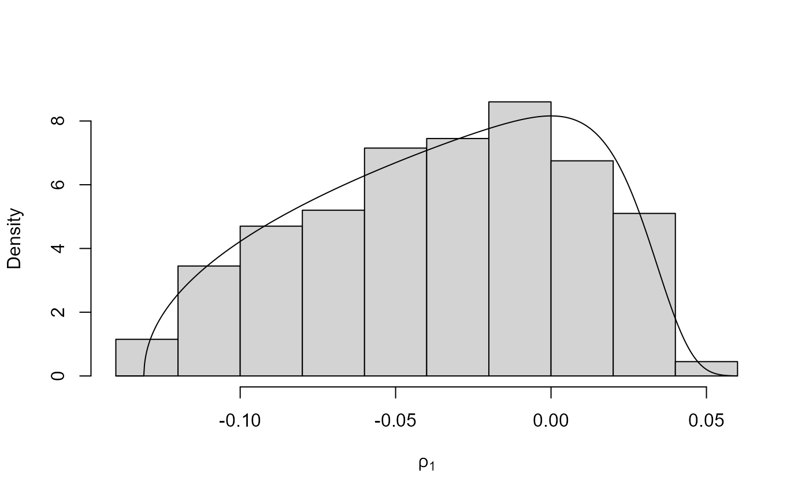

R/box_cox_functions_rcpp.R
find_lambda_one_d_rcpp.RdFinds a value of the Box-Cox transformation parameter lambda for which the (positive univariate) random variable with log-density logf has a density closer to that of a Gaussian random variable. Works by estimating a set of quantiles of the distribution implied by logf and treating those quantiles as data in a standard Box-Cox analysis. In the following we use theta to denote the argument of logf on the original scale and phi on the Box-Cox transformed scale.
find_lambda_one_d_rcpp( logf, ..., ep_bc = 1e-04, min_phi = ep_bc, max_phi = 10, num = 1001L, xdiv = 100, probs = seq(0.01, 0.99, by = 0.01), lambda_range = c(-3, 3), phi_to_theta = NULL, log_j = NULL, user_args = list() )
| logf | A pointer to a compiled C++ function returning the log of the target density \(f\). |
|---|---|
| ... | further arguments to be passed to |
| ep_bc | A (positive) numeric scalar. Smallest possible value of phi to consider. Used to avoid negative values of phi. |
| min_phi, max_phi | Numeric scalars. Smallest and largest values of phi at which to evaluate logf, i.e. the range of values of phi over which to evaluate logf. Any components in min_phi that are not positive are set to ep_bc. |
| num | A numeric scalar. Number of values at which to evaluate logf. |
| xdiv | A numeric scalar. Only values of phi at which the density f is
greater than the (maximum of f) / |
| probs | A numeric scalar. Probabilities at which to estimate the quantiles of that will be used as data to find lambda. |
| lambda_range | A numeric vector of length 2. Range of lambda over which to optimise. |
| phi_to_theta | A pointer to a compiled C++ function returning
(the inverse) of the transformation from theta to phi used to ensure
positivity of phi prior to Box-Cox transformation. The argument is
phi and the returned value is theta. If |
| log_j | A pointer to a compiled C++ function returning the log of the Jacobian of the transformation from theta to phi, i.e. based on derivatives of phi with respect to theta. Takes theta as its argument. If this is not supplied then a constant Jacobian is used. |
| user_args | A list of numeric components providing arguments to
the user-supplied functions |
A list containing the following components
A numeric scalar. The value of lambda.
A numeric scalar. Box-cox scaling parameter, estimated by the geometric mean of the quantiles used in the optimisation to find the value of lambda.
A numeric scalar. An initial estimate of the mode of the Box-Cox transformed density
A numeric scalar. Estimates of the marginal standard deviations of the Box-Cox transformed variables.
as detailed above (only if phi_to_theta is
supplied)
as detailed above (only if log_j is supplied)
as detailed above (only if user_args is supplied)
The general idea is to estimate quantiles of f corresponding to a
set of equally-spaced probabilities in probs and to use these
estimated quantiles as data in a standard estimation of the Box-Cox
transformation parameter lambda.
The density f is first evaluated at num points equally spaced over
the interval (min_phi, max_phi). The continuous density f
is approximated by attaching trapezium-rule estimates of probabilities
to the midpoints of the intervals between the points. After standardizing
to account for the fact that f may not be normalized,
(min_phi, max_phi) is reset so that values with small
estimated probability (determined by xdiv) are excluded and the
procedure is repeated on this new range. Then the required quantiles are
estimated by inferring them from a weighted empirical distribution
function based on treating the midpoints as data and the estimated
probabilities at the midpoints as weights.
Box, G. and Cox, D. R. (1964) An Analysis of Transformations. Journal of the Royal Statistical Society. Series B (Methodological), 26(2), 211-252.
Andrews, D. F. and Gnanadesikan, R. and Warner, J. L. (1971) Transformations of Multivariate Data, Biometrics, 27(4).
Eddelbuettel, D. and Francois, R. (2011). Rcpp: Seamless R and C++ Integration. Journal of Statistical Software, 40(8), 1-18. https://www.jstatsoft.org/v40/i08/.
Eddelbuettel, D. (2013). Seamless R and C++ Integration with Rcpp, Springer, New York. ISBN 978-1-4614-6867-7.
ru_rcpp to perform ratio-of-uniforms sampling.
find_lambda_rcpp to produce (somewhat) automatically
a list for the argument lambda of ru for any value of
d.
# Log-normal density =================== # Note: the default value of max_phi = 10 is OK here but this will not # always be the case. ptr_lnorm <- create_xptr("logdlnorm") mu <- 0 sigma <- 1 lambda <- find_lambda_one_d_rcpp(logf = ptr_lnorm, mu = mu, sigma = sigma) lambda#> $lambda #> [1] 0.06564725 #> #> $gm #> [1] 0.9535484 #> #> $init_psi #> [1] -0.06345259 #> #> $sd_psi #> [1] 0.9753502 #> #> $user_args #> list() #>x <- ru_rcpp(logf = ptr_lnorm, mu = mu, sigma = sigma, log = TRUE, d = 1, n = 1000, trans = "BC", lambda = lambda) # Gamma density =================== alpha <- 1 # Choose a sensible value of max_phi max_phi <- qgamma(0.999, shape = alpha) # [I appreciate that typically the quantile function won't be available. # In practice the value of lambda chosen is quite insensitive to the choice # of max_phi, provided that max_phi is not far too large or far too small.] ptr_gam <- create_xptr("logdgamma") lambda <- find_lambda_one_d_rcpp(logf = ptr_gam, alpha = alpha, max_phi = max_phi) lambda#> $lambda #> [1] 0.2727968 #> #> $gm #> [1] 0.5689906 #> #> $init_psi #> [1] -0.2016904 #> #> $sd_psi #> [1] 0.7835109 #> #> $user_args #> list() #>x <- ru_rcpp(logf = ptr_gam, alpha = alpha, d = 1, n = 1000, trans = "BC", lambda = lambda) alpha <- 0.1 # NB. for alpha < 1 the gamma(alpha, beta) density is not bounded # So the ratio-of-uniforms emthod can't be used but it may work after a # Box-Cox transformation. # find_lambda_one_d() works much better than find_lambda() here. max_phi <- qgamma(0.999, shape = alpha) lambda <- find_lambda_one_d_rcpp(logf = ptr_gam, alpha = alpha, max_phi = max_phi) lambda#> $lambda #> [1] 0.06758891 #> #> $gm #> [1] 0.008056577 #> #> $init_psi #> [1] -0.0342618 #> #> $sd_psi #> [1] 0.009372876 #> #> $user_args #> list() #>x <- ru_rcpp(logf = ptr_gam, alpha = alpha, d = 1, n = 1000, trans = "BC", lambda = lambda) # \donttest{ plot(x)# }